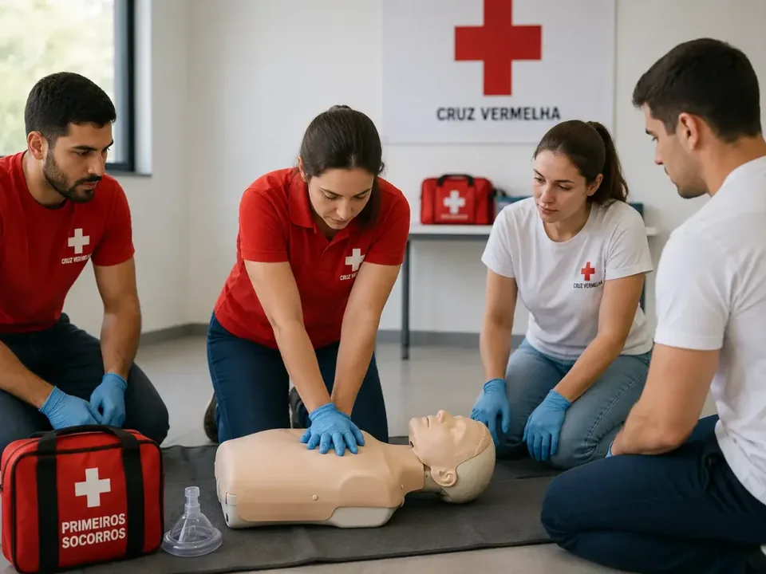
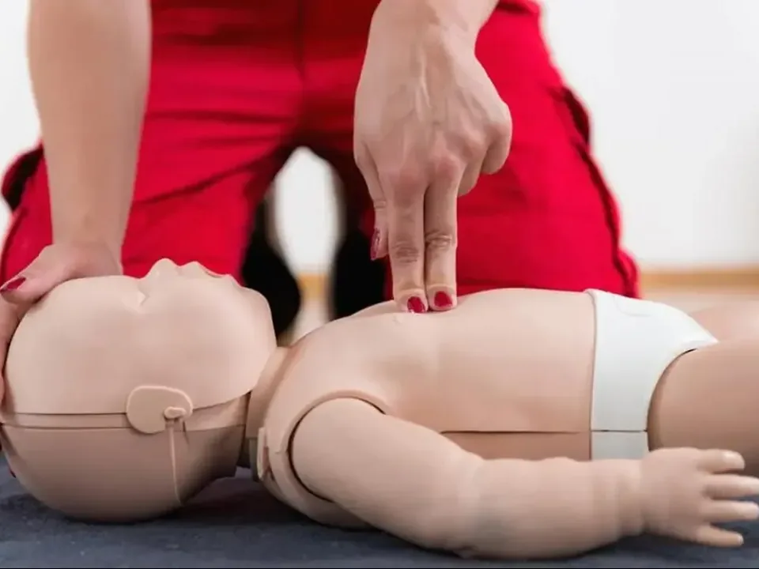
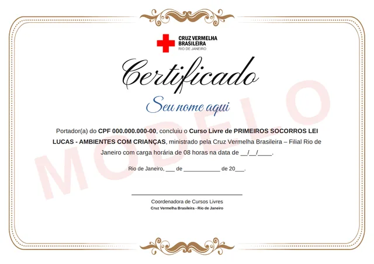
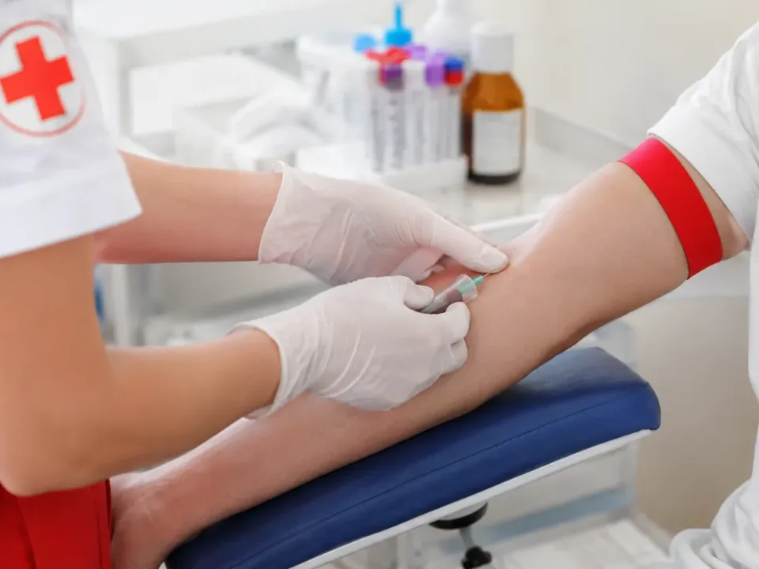
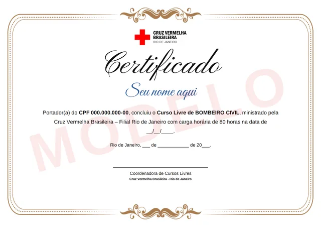
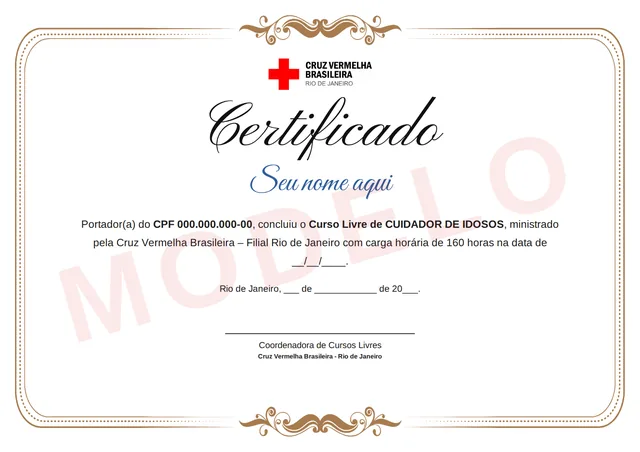
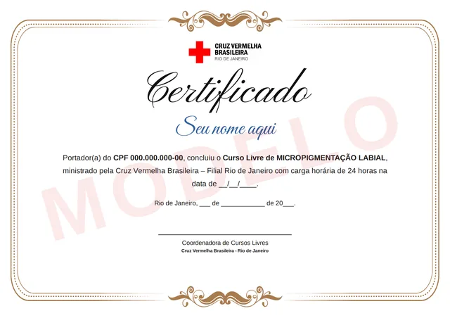
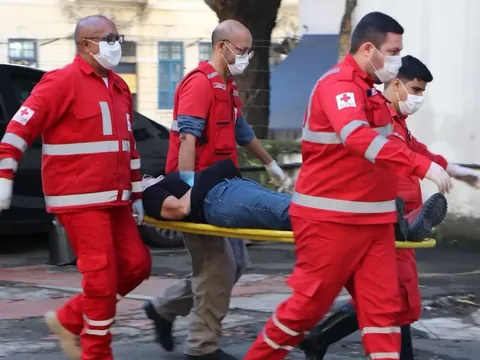
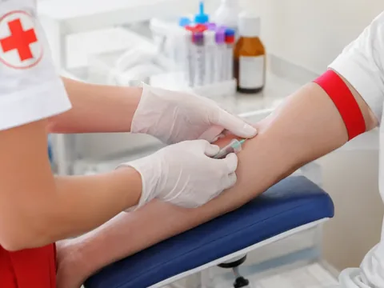
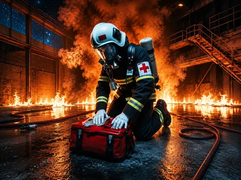

Primeiros Socorros Básico
Do engasgo à RCP: agir até o socorro chegar
InscriçãoR$ 99paga agora
CursoR$ 180pago depois, na escola
PIX ou cartão
Escola de Educação e Saúde
Aprenda na prática, na sede da Cruz Vermelha Brasileira Rio de Janeiro, no Centro.
Escolha seu curso, veja os detalhes e garanta sua vaga.
Praça da Cruz Vermelha, 10 — Centro, Rio de Janeiro


Emergência · Curso presencial
Em 8 horas, com prática supervisionada, você aprende RCP, o uso do desfibrilador e o que fazer em engasgos, desmaios e hemorragias.
PIX ou cartão
7 dias para desistir, com o valor de volta
O Curso de Primeiros Socorros Básico da Cruz Vermelha - Rio de Janeiro forma pessoas capacitadas para reconhecer situações de emergência, prestar o atendimento inicial de forma segura e agir com rapidez até a chegada do serviço especializado.
Durante a formação, o aluno desenvolve conhecimentos teóricos e práticos em avaliação da vítima, reanimação cardiopulmonar (RCP), utilização do desfibrilador externo automático (DEA), controle de hemorragias, atendimento inicial em casos de traumas, engasgos, desmaios e outras situações de urgência, sempre seguindo diretrizes atualizadas de atendimento.
Após a conclusão, o participante estará preparado para prestar os primeiros cuidados em ambientes domésticos, escolares, empresariais, esportivos e comunitários, contribuindo para a preservação da vida e para uma resposta mais eficiente em situações de emergência.
Inclui Lei Lucas.
Para qualquer pessoa, mesmo fora da área da saúde, que quer saber agir em casa, na escola, no trabalho ou no esporte.
Certificação: ao concluir os requisitos do curso, você recebe o certificado da Cruz Vermelha Brasileira Rio de Janeiro, com o seu nome, o curso e a carga horária. Veja o certificado.
Pode. O curso foi desenvolvido para qualquer pessoa interessada em aprender primeiros socorros, e a escolaridade mínima é o Ensino Fundamental. As aulas são presenciais, na Praça da Cruz Vermelha, 10, no Centro do Rio, com atividades demonstrativas e práticas supervisionadas: RCP, desengasgo e controle de hemorragias são praticados com manequim e instrutor ao lado. O curso prepara para o atendimento inicial até a chegada do serviço especializado e não habilita para o exercício profissional.
Não. O curso foi desenvolvido para qualquer pessoa interessada em aprender primeiros socorros.
Sim. Certificado emitido pela Cruz Vermelha Brasileira – Filial do Estado do Rio de Janeiro.
Não. O curso capacita para prestar atendimento inicial até a chegada do serviço especializado, não habilitando o participante para o exercício profissional de atividades privativas de profissionais regulamentados.
Sim. O curso possui atividades demonstrativas e práticas supervisionadas.
Recomenda-se atualização periódica dos conhecimentos, especialmente em razão das revisões dos protocolos internacionais de atendimento.
Inscrição de R$ 99 agora, por PIX ou cartão · curso R$ 180 pago depois, na escola · sem criar conta
Dúvida antes de pagar? Pergunte no chat.
Tem um grupo de 15 a 30 pessoas ou quer este curso em inglês? Peça uma turma.
Emergência · Curso presencial
Aprenda a reconhecer uma emergência, fazer RCP e usar o desfibrilador até a chegada do socorro especializado, com teoria e prática.
PIX ou cartão
7 dias para desistir, com o valor de volta
O Curso de Suporte Básico de Vida da Cruz Vermelha forma pessoas capacitadas para reconhecer situações de emergência, prestar o atendimento inicial de forma segura e agir com rapidez até a chegada do serviço especializado.
Durante a formação, o aluno desenvolve conhecimentos teóricos e práticos em avaliação da vítima, reanimação cardiopulmonar (RCP), utilização do desfibrilador externo automático (DEA), controle de hemorragias, atendimento inicial em casos de traumas, engasgos, desmaios e outras situações de urgência, sempre seguindo diretrizes atualizadas de atendimento.
Após a conclusão, o participante estará preparado para prestar os primeiros cuidados em ambientes domésticos, escolares, empresariais, esportivos e comunitários, contribuindo para a preservação da vida e para uma resposta mais eficiente em situações de emergência.
Profissionais da saúde, educação, segurança e empresas, e qualquer pessoa que queira agir certo numa emergência, sem experiência prévia.
Certificação: ao concluir os requisitos do curso, você recebe o certificado da Cruz Vermelha Brasileira Rio de Janeiro, com o seu nome, o curso e a carga horária. Veja o certificado.
Pode. O curso é aberto tanto a profissionais quanto a pessoas sem experiência prévia, e pede apenas Ensino Fundamental. As 4 horas são presenciais, na Praça da Cruz Vermelha, 10, no Centro do Rio, e combinam teoria e treinamento prático para desenvolver segurança durante os atendimentos: RCP, desengasgo e controle de hemorragias pedem prática com manequim e instrutor ao lado. O curso prepara para o atendimento inicial até a chegada do socorro especializado e não substitui habilitação profissional regulamentada.
É indicado para profissionais da saúde, educação, segurança, empresas e também para qualquer pessoa que deseje aprender a agir corretamente em situações de emergência.
Você aprenderá técnicas essenciais para prestar o primeiro atendimento até a chegada do serviço especializado, aumentando as chances de um atendimento seguro e eficiente.
Sim. A metodologia combina teoria e treinamento prático para desenvolver segurança durante os atendimentos.
Não. O curso é aberto tanto para profissionais quanto para pessoas sem experiência prévia.
Sim. A formação em Primeiros Socorros é um diferencial valorizado em diversas áreas profissionais.
Inscrição de R$ 99 agora, por PIX ou cartão · curso R$ 150 pago depois, na escola · sem criar conta
Dúvida antes de pagar? Pergunte no chat.
Tem um grupo de 15 a 30 pessoas ou quer este curso em inglês? Peça uma turma.

Emergência · Curso presencial
Em 8 horas presenciais, com teoria e prática, você aprende a agir em engasgos, quedas, convulsões, queimaduras e hemorragias em crianças, e a fazer RCP.
PIX ou cartão
7 dias para desistir, com o valor de volta
O Curso de Primeiros Socorros em Crianças da Cruz Vermelha forma pessoas capacitadas para reconhecer situações de emergência envolvendo o público infantil e prestar o atendimento inicial com rapidez, segurança e responsabilidade até a chegada do serviço especializado.
Durante a formação, o aluno desenvolve conhecimentos teóricos e práticos em avaliação da criança, reanimação cardiopulmonar (RCP), atendimento em casos de engasgos, quedas, traumas, convulsões, queimaduras, hemorragias e outras situações de urgência, além de aprender medidas preventivas e protocolos atualizados de primeiros socorros voltados ao atendimento infantil.
Após a conclusão, o participante estará preparado para atuar de forma segura em ambientes familiares, escolas, creches, instituições de ensino, projetos sociais, atividades esportivas e demais locais que envolvam o cuidado com crianças, contribuindo para a preservação da vida e para uma resposta eficiente em situações de emergência.
Professores e funcionários de escolas e espaços de recreação infantil (Lei 13.722/2018), creches e famílias que cuidam de crianças.

Certificação: ao concluir os requisitos do curso, você recebe o certificado da Cruz Vermelha Brasileira Rio de Janeiro, com o seu nome, o curso e a carga horária. Veja o certificado.
A Lei Lucas (Lei Federal 13.722/2018) obriga escolas de educação básica, públicas e privadas, e espaços de recreação infantil a capacitar professores e funcionários em noções básicas de primeiros socorros. Para atender a essa exigência, a Cruz Vermelha Brasileira Rio de Janeiro oferece este curso. Não é preciso ser da saúde: os cursos de primeiros socorros são abertos a qualquer pessoa, e a escolaridade mínima é o Ensino Fundamental. São 8 horas presenciais na Praça da Cruz Vermelha, 10, no Centro. É curso livre: prepara para o atendimento inicial até a chegada do socorro especializado e não substitui habilitação profissional regulamentada. A escola que quer treinar a equipe inteira pode pedir uma turma fechada, de 15 a 30 pessoas, no botão “Pedir turma para grupo”, nesta página.
A Lei Lucas (Lei Federal 13.722/2018) obriga escolas de educação básica, públicas e privadas, e espaços de recreação infantil a capacitar professores e funcionários em noções básicas de primeiros socorros. Para atender a essa exigência, a Cruz Vermelha Brasileira Rio de Janeiro oferece o curso Primeiros Socorros Lei Lucas - Ambientes com Crianças: 8 horas presenciais sobre avaliação da criança, RCP, engasgos, quedas, traumas, convulsões, queimaduras e hemorragias, com medidas preventivas e protocolos atualizados de primeiros socorros infantis. Escolaridade mínima: Ensino Fundamental; valor do curso: R$ 150, além da inscrição de R$ 99. Faça a matrícula no curso Lei Lucas ou fale com a gente para treinar toda a equipe da sua escola.
Inscrição de R$ 99 agora, por PIX ou cartão · curso R$ 150 pago depois, na escola · sem criar conta
Dúvida antes de pagar? Pergunte no chat.
Tem um grupo de 15 a 30 pessoas ou quer este curso em inglês? Peça uma turma.

Saúde · Curso presencial
Acesso venoso com segurança e precisão: anatomia, materiais, preparo do paciente e prevenção de complicações.
PIX ou cartão
7 dias para desistir, com o valor de volta
O Curso de Punção Venosa da Cruz Vermelha forma profissionais capacitados para realizar procedimentos de acesso venoso com segurança, precisão e responsabilidade, seguindo as normas técnicas e os protocolos de biossegurança.
Durante a formação, o aluno desenvolve conhecimentos teóricos e práticos sobre anatomia do sistema venoso, técnicas de punção venosa, identificação e utilização correta dos materiais, preparo do paciente, prevenção de complicações, controle de infecções, biossegurança e boas práticas aplicadas à rotina dos serviços de saúde.
Após a conclusão, o profissional estará preparado para atuar em hospitais, clínicas, laboratórios, unidades de saúde, serviços de coleta e demais instituições da área da saúde, executando procedimentos de punção venosa com competência, segurança e qualidade.
Estudantes e profissionais da saúde que querem aperfeiçoar a técnica, conforme as normas da profissão. Pede Ensino Médio.
Certificação: ao concluir os requisitos do curso, você recebe o certificado da Cruz Vermelha Brasileira Rio de Janeiro, com o seu nome, o curso e a carga horária. Veja o certificado.
Grande parte do aprendizado acontece em atividades práticas supervisionadas, na sede da Praça da Cruz Vermelha, 10, no Centro do Rio. Além da técnica de punção venosa, o curso aborda biossegurança, prevenção de complicações, escolha de dispositivos e boas práticas assistenciais. A vaga é garantida com a inscrição de R$ 99; os R$ 150 do curso são pagos depois, na plataforma da escola.
O curso é destinado a estudantes e profissionais da área da saúde que desejam aperfeiçoar suas habilidades técnicas, conforme as normas da profissão.
Sim. Grande parte do aprendizado acontece em atividades práticas supervisionadas.
Além da técnica de punção venosa, o curso aborda biossegurança, prevenção de complicações, escolha de dispositivos e boas práticas assistenciais.
Sim. A punção venosa é uma competência bastante valorizada em hospitais, clínicas, laboratórios e serviços de saúde.
Sim. O certificado é emitido pela Cruz Vermelha Brasileira Rio de Janeiro ao término do curso.
Inscrição de R$ 99 agora, por PIX ou cartão · curso R$ 150 pago depois, na escola · sem criar conta
Dúvida antes de pagar? Pergunte no chat.
Tem um grupo de 15 a 30 pessoas ou quer este curso em inglês? Peça uma turma.
Formação profissional · Curso presencial
Em 80 horas, aprenda a combater princípios de incêndio, prestar primeiros socorros e evacuar ambientes, com aulas práticas que simulam emergências reais.
PIX ou cartão
7 dias para desistir, com o valor de volta
O Curso de Bombeiro Civil da Cruz Vermelha forma profissionais capacitados para prevenir acidentes, combater princípios de incêndio, prestar primeiros socorros e atuar na proteção de pessoas e do patrimônio em situações de emergência.
Durante a formação, o aluno desenvolve conhecimentos teóricos e práticos em prevenção e combate a incêndios, atendimento pré-hospitalar básico, evacuação de ambientes, uso de equipamentos de segurança, gerenciamento de riscos e resposta a emergências.
Após a conclusão, o profissional poderá atuar em empresas, indústrias, hospitais, condomínios, shopping centers, aeroportos, hotéis, instituições de ensino, eventos e diversos estabelecimentos que necessitam de equipes especializadas em prevenção e atendimento a emergências.
Homologação somente no final do curso, valor a consultar, a cargo do aluno.
Para quem tem Ensino Médio e quer atuar na prevenção e resposta a emergências, mesmo sem experiência na área.

Certificação: ao concluir os requisitos do curso, você recebe o certificado da Cruz Vermelha Brasileira Rio de Janeiro, com o seu nome, o curso e a carga horária. Veja o certificado.
Não. A homologação é feita somente ao final do curso, à parte, com valor a consultar e paga pelo aluno. Agora você paga só a inscrição de R$ 99, que garante a vaga; o valor do curso, R$ 950, é pago depois na plataforma da escola, à vista ou parcelado com juros.
Qualquer pessoa que atenda aos pré-requisitos do curso e tenha interesse em atuar na prevenção e combate a incêndios, primeiros socorros e atendimento a emergências.
Sim. O certificado é emitido pela Cruz Vermelha Brasileira Rio de Janeiro, instituição reconhecida nacional e internacionalmente por sua tradição em formação na área humanitária e de emergências.
O profissional pode atuar em empresas, condomínios, indústrias, hospitais, eventos, centros comerciais, instituições de ensino e outros locais que exigem equipes de prevenção e resposta a emergências.
Sim. O aluno desenvolve habilidades por meio de atividades práticas que simulam situações reais de emergência.
Não. O curso foi desenvolvido para formar novos profissionais, desde que atendam aos requisitos de matrícula.
Inscrição de R$ 99 agora, por PIX ou cartão · curso R$ 950 pago depois, na escola · sem criar conta
Dúvida antes de pagar? Pergunte no chat.
Tem um grupo de 15 a 30 pessoas ou quer este curso em inglês? Peça uma turma.
Formação profissional · Curso presencial
Em 160 horas presenciais, você aprende higiene, alimentação, mobilização, prevenção de acidentes e noções de primeiros socorros no cuidado da pessoa idosa.
PIX ou cartão
7 dias para desistir, com o valor de volta
O Curso de Cuidador de Idosos da Cruz Vermelha forma profissionais capacitados para prestar assistência à pessoa idosa com segurança, responsabilidade, empatia e respeito, promovendo qualidade de vida e bem-estar em diferentes contextos de cuidado.
Durante a formação, o aluno desenvolve conhecimentos teóricos e práticos sobre higiene, alimentação, administração da rotina de cuidados, prevenção de acidentes, técnicas de mobilização, noções de primeiros socorros, além de compreender os aspectos físicos, emocionais e sociais do processo de envelhecimento, proporcionando um atendimento mais humanizado.
Após a conclusão, o profissional poderá atuar em residências, instituições de longa permanência para idosos (ILPIs), clínicas, hospitais, centros de convivência, serviços de atendimento domiciliar e demais ambientes voltados ao cuidado e à assistência da pessoa idosa.
Para quem quer trabalhar como cuidador de idosos ou cuidar de alguém da família. Pede Ensino Fundamental.

Certificação: ao concluir os requisitos do curso, você recebe o certificado da Cruz Vermelha Brasileira Rio de Janeiro, com o seu nome, o curso e a carga horária. Veja o certificado.
Quem conclui recebe o certificado de curso livre emitido pela Cruz Vermelha Brasileira Rio de Janeiro, com o nome do curso e a carga horária de 160 horas. Ele não é reconhecido pelo MEC, e nenhum curso livre é: o MEC regula a educação formal, como ensino técnico, graduação e pós. É um diferencial valorizado no currículo, mas não substitui habilitação profissional regulamentada.
Qualquer pessoa interessada em atuar no cuidado de pessoas idosas, seja profissionalmente ou para cuidar de familiares.
O curso oferece excelente formação, porém a possibilidade de atuação em outro país depende da legislação e das exigências específicas de cada local, podendo ser necessária complementação ou validação da formação.
O cuidador pode atuar em residências, instituições de longa permanência, clínicas, centros de convivência e serviços de assistência ao idoso.
Sim. O aluno aprende técnicas de cuidados diários, mobilização, higiene, alimentação, prevenção de acidentes, primeiros socorros, ética e humanização no atendimento.
Sim. Com o aumento da população idosa, a demanda por profissionais qualificados cresce continuamente, tornando essa uma área com excelentes oportunidades.
Inscrição de R$ 99 agora, por PIX ou cartão · curso R$ 950 pago depois, na escola · sem criar conta
Dúvida antes de pagar? Pergunte no chat.
Tem um grupo de 15 a 30 pessoas ou quer este curso em inglês? Peça uma turma.
Estética · Curso presencial
Em 24 horas presenciais, você aprende a implantar pigmentos, corrigir assimetrias visuais e uniformizar a cor dos lábios, com biossegurança.
PIX ou cartão
7 dias para desistir, com o valor de volta
O Curso de Micropigmentação Labial da Cruz Vermelha forma profissionais capacitados para realizar procedimentos estéticos semipermanentes com segurança, precisão e excelência, valorizando a beleza natural dos lábios e proporcionando resultados harmoniosos.
Durante a formação, o aluno desenvolve conhecimentos teóricos e práticos sobre colorimetria, anatomia e fisiologia da pele, biossegurança, técnicas de implantação de pigmentos, correção de assimetrias visuais, uniformização da coloração labial, cuidados pré e pós-procedimento, além da utilização correta dos equipamentos e materiais utilizados na micropigmentação.
Após a conclusão, o profissional poderá atuar em clínicas de estética, salões de beleza, estúdios especializados, centros de estética ou como profissional autônomo, oferecendo um dos procedimentos mais valorizados do mercado da beleza, com alto potencial de crescimento e retorno financeiro.
Para quem está começando na estética e para profissionais que querem ampliar seus serviços. Pede Ensino Médio, sem exigir experiência.

Certificação: ao concluir os requisitos do curso, você recebe o certificado da Cruz Vermelha Brasileira Rio de Janeiro, com o seu nome, o curso e a carga horária. Veja o certificado.
Serve. O curso atende tanto iniciantes quanto profissionais que desejam ampliar seus serviços, e não exige experiência prévia: a escolaridade mínima é o Ensino Médio. São 24 horas presenciais na sede, na Praça da Cruz Vermelha, 10, no Centro do Rio, com abordagem prática para desenvolver segurança e qualidade na execução da técnica.
Não. O curso atende tanto iniciantes quanto profissionais que desejam ampliar seus serviços.
Sim. O curso possui abordagem prática para desenvolver segurança e qualidade na execução da técnica.
Após concluir o curso e respeitando a legislação aplicável à sua profissão, você estará preparado para iniciar seus atendimentos.
Você aprenderá técnicas atuais, biossegurança, avaliação do cliente, colorimetria, cuidados pré e pós-procedimento e orientações para melhores resultados.
Sim. Ao concluir todas as etapas do curso, o aluno recebe certificado emitido pela Cruz Vermelha Brasileira Rio de Janeiro.
Inscrição de R$ 99 agora, por PIX ou cartão · curso R$ 400 pago depois, na escola · sem criar conta
Dúvida antes de pagar? Pergunte no chat.
Tem um grupo de 15 a 30 pessoas ou quer este curso em inglês? Peça uma turma.
Do engasgo à RCP: agir até o socorro chegar
PIX ou cartão

EmergênciaRCP e desfibrilador em 4 horas, com prática
PIX ou cartão
RCP, engasgo, quedas e convulsões em crianças
PIX ou cartão

SaúdeAcesso venoso seguro, com prática supervisionada
PIX ou cartão

Formação profissionalIncêndio, primeiros socorros e evacuação em 80h
PIX ou cartão
Higiene, mobilização e prevenção de acidentes
PIX ou cartão
Colorimetria, biossegurança e prática da técnica
PIX ou cartão
De 15 a 30 alunos, com o mesmo valor por pessoa. Qualquer curso também em inglês.
Nenhum curso nesta categoria.
Na sede
Conhecimento para entender. Prática para saber como agir.


Matrícula
Quatro passos, sem criar conta antes de pagar.
Veja os detalhes, a carga horária e o investimento de cada curso.
Pague a inscrição de R$ 99 por PIX ou cartão, sem criar conta.
Com o pagamento confirmado, você recebe por e-mail o comprovante e as orientações da Escola: turma, horário e o valor do curso, pago na plataforma da escola.
Compareça na data da sua turma, na Praça da Cruz Vermelha, 10, e participe da formação presencial.
Você pode desistir da inscrição em até 7 dias corridos, contados do pagamento, sem precisar dizer o motivo (art. 49 do CDC). O valor pago volta por inteiro, inclusive o custo de processamento, se você tiver escolhido cobri-lo. Regras de cancelamento e reembolso.
Certificado
Após concluir os requisitos do curso, o aluno recebe seu certificado emitido pela Cruz Vermelha Brasileira Rio de Janeiro.
O certificado leva o nome da Cruz Vermelha, reconhecida nacional e internacionalmente pela tradição em formação humanitária e em emergências.
Imagem de modelo: o seu sai com o seu nome, o curso que você fez e a data de conclusão.
Quem dá o curso
A Escola de Educação e Saúde é a escola da Cruz Vermelha Brasileira Rio de Janeiro. A Cruz Vermelha forma pessoas no Rio desde 1914, quando começou o primeiro curso, de Enfermeiras Voluntárias. As aulas acontecem na sede da filial, o Palácio da Cruz Vermelha, construído entre 1919 e 1923 e tombado como patrimônio cultural federal.

Localização
Cruz Vermelha Brasileira Rio de JaneiroPraça da Cruz Vermelha, 10
Centro — Rio de Janeiro, RJ · CEP 20230-130
Todos os cursos são presenciais, no Palácio da Cruz Vermelha, sede da filial. Os dias e horários são os de cada turma.

Dúvidas frequentes
Não. Os R$ 99 são a inscrição: garantem sua vaga no curso escolhido, na Escola de Educação e Saúde, a escola da Cruz Vermelha Brasileira Rio de Janeiro. O valor de cada curso, de R$ 150 a R$ 950, aparece no cartão dele e é pago depois, na plataforma da escola, à vista ou parcelado com juros.
Você escolhe o curso, informa nome, CPF, e-mail e telefone celular e paga a inscrição de R$ 99, por PIX ou cartão, sem criar conta. Se o curso já tem turma aberta, sua matrícula entra nela assim que o pagamento é confirmado, e a data de início aparece na tela de confirmação e no e-mail. Se ainda não tem, a secretaria coloca você na próxima turma e avisa por e-mail. Depois do pagamento, você também marca os dias e os períodos em que pode vir.
A inscrição de R$ 99 é paga à vista, por PIX ou cartão. O valor do curso é pago na plataforma da escola, à vista ou parcelado com juros, nas condições informadas lá.
Depois da inscrição, na plataforma da escola, à vista ou parcelado com juros. Os valores de cada curso estão nos cartões desta página.
Na sede da filial, o Palácio da Cruz Vermelha, na Praça da Cruz Vermelha, 10, Centro do Rio de Janeiro. Todos os cursos são presenciais.
Se o curso já tem turma aberta, sua matrícula entra nela assim que o pagamento é confirmado, e a data de início aparece na tela de confirmação e no e-mail. Se ainda não tem, a secretaria coloca você na próxima turma e avisa por e-mail. Depois do pagamento, você também marca os dias e os períodos em que pode vir. Tudo chega no e-mail informado na inscrição.
Primeiros Socorros Básico: 8 horas, curso R$ 180. Inclui Lei Lucas. Para qualquer pessoa, mesmo fora da área da saúde: em casa, na escola, no trabalho ou no esporte. Suporte Básico de Vida: 4 horas, curso R$ 150. O mais curto: profissionais da saúde, educação, segurança e empresas, e qualquer pessoa, sem experiência prévia. Primeiros Socorros Lei Lucas - Ambientes com Crianças: 8 horas, curso R$ 150. Para quem trabalha com crianças em escolas de educação básica e espaços de recreação infantil (Lei 13.722/2018). Os três pedem Ensino Fundamental.
Sim. Quem conclui os requisitos do curso recebe o certificado da Cruz Vermelha Brasileira Rio de Janeiro, com o seu nome, o curso e a carga horária. A Cruz Vermelha é reconhecida nacional e internacionalmente pela tradição em formação humanitária e em emergências. Como todo curso livre, aqui ou em qualquer instituição, ele não passa pelo MEC, que regula a educação formal (ensino técnico, graduação e pós). No Bombeiro Civil, a homologação profissional é feita ao final do curso, à parte.
Cada curso pede uma escolaridade mínima, informada no cartão dele (Ensino Fundamental ou Ensino Médio). Sobre idade mínima: informação em breve. Em caso de dúvida, pergunte no chat da página antes de pagar. Para jovens de 12 a 14 anos há uma turma própria de primeiros socorros, pedida pelo responsável ou pela escola em “Solicitar uma turma”.
Você pode desistir da inscrição em até 7 dias corridos, contados do pagamento, sem precisar dizer o motivo (art. 49 do CDC). O valor pago volta por inteiro, inclusive o custo de processamento, se você tiver escolhido cobri-lo. Para pedir, use o chat “Fale com a gente”, no assunto “Pagamento ou PIX”. As regras completas estão na página de cancelamento e reembolso.
Se não houver turma com horário compatível para você, a inscrição é devolvida por inteiro, mesmo depois dos 7 dias. As regras completas estão na página de cancelamento e reembolso.
Sim. Com 15 a 30 alunos, a turma é só do grupo (empresa, escola, condomínio, instituição), com data combinada com a secretaria e o mesmo valor por pessoa dos cursos, na sede; em outro local, depende de aprovação. Qualquer curso pode ser dado em inglês, com professor ou tradutor. Peça em “Solicitar uma turma”: nada é cobrado agora e a secretaria responde em até 3 dias úteis.
Não achou sua dúvida? Pergunte no chat da página. O que ficar de fora, a equipe responde por e-mail em até 3 dias úteis.
Para empresas e grupos
Também organizamos turmas para empresas, escolas, condomínios, instituições e grupos: de 15 a 30 alunos, com o mesmo valor por pessoa, na sede. Qualquer curso também em inglês, e primeiros socorros para jovens de 12 a 14 anos.
Nada é cobrado agora. A secretaria responde em até 3 dias úteis.
Matrícula
Escolha sua formação, veja os detalhes e garanta sua vaga.
Inscrição de R$ 99 por PIX ou cartão · valor do curso pago depois, na escola · 7 dias para desistir, com o valor de volta